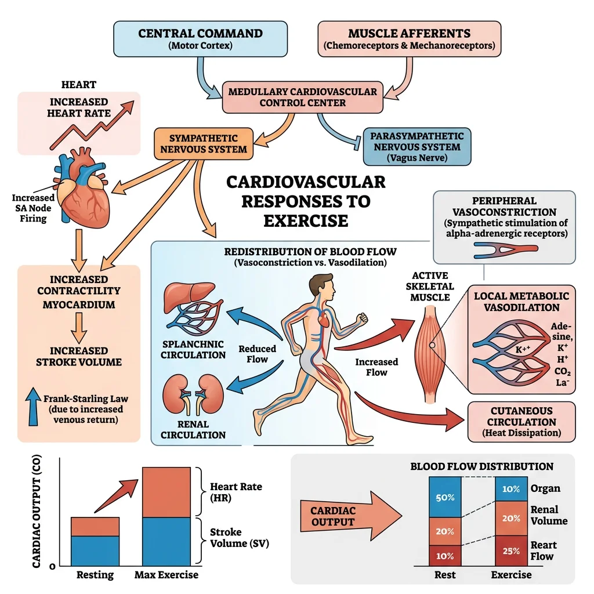
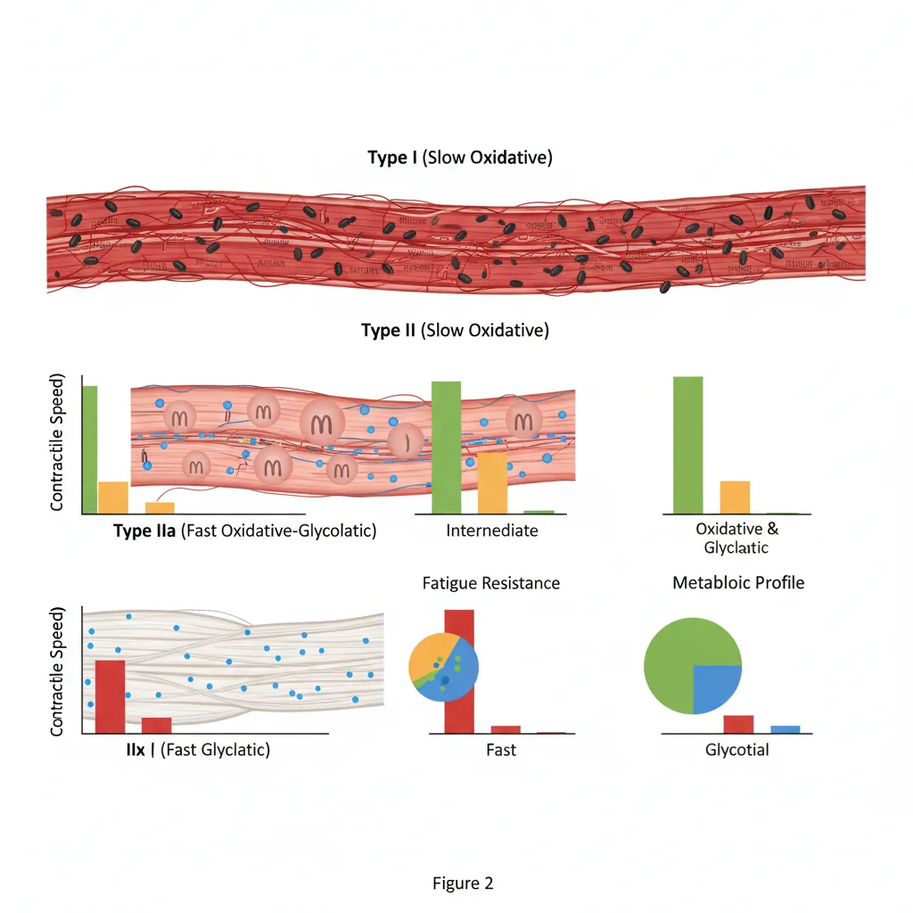
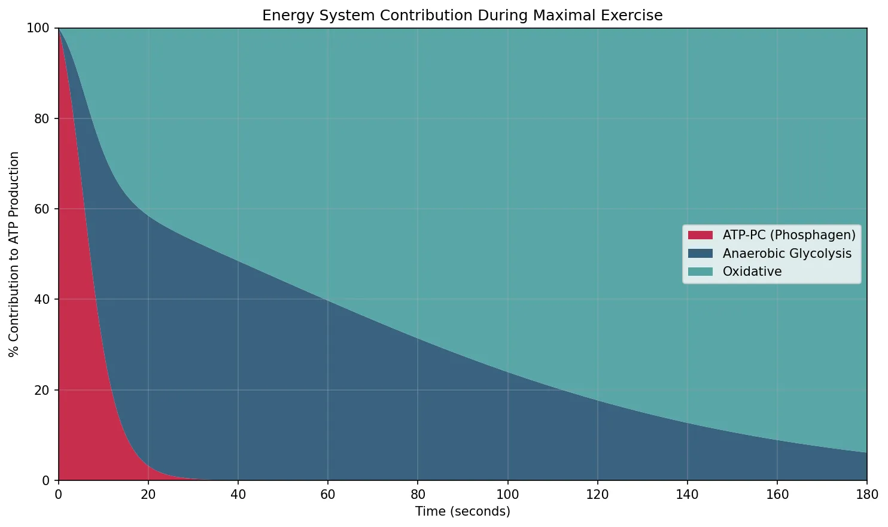
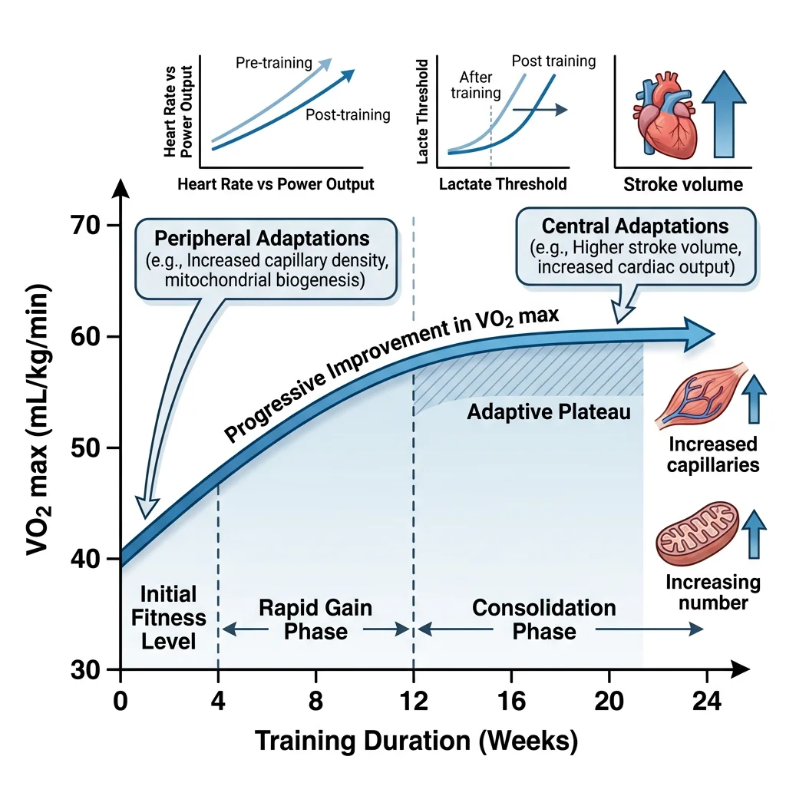
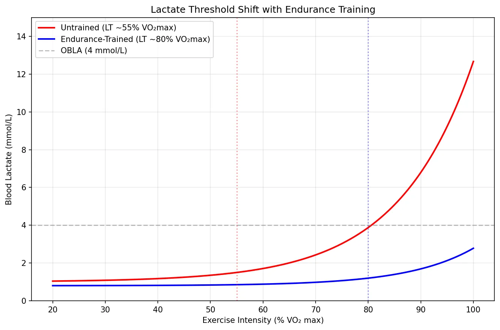
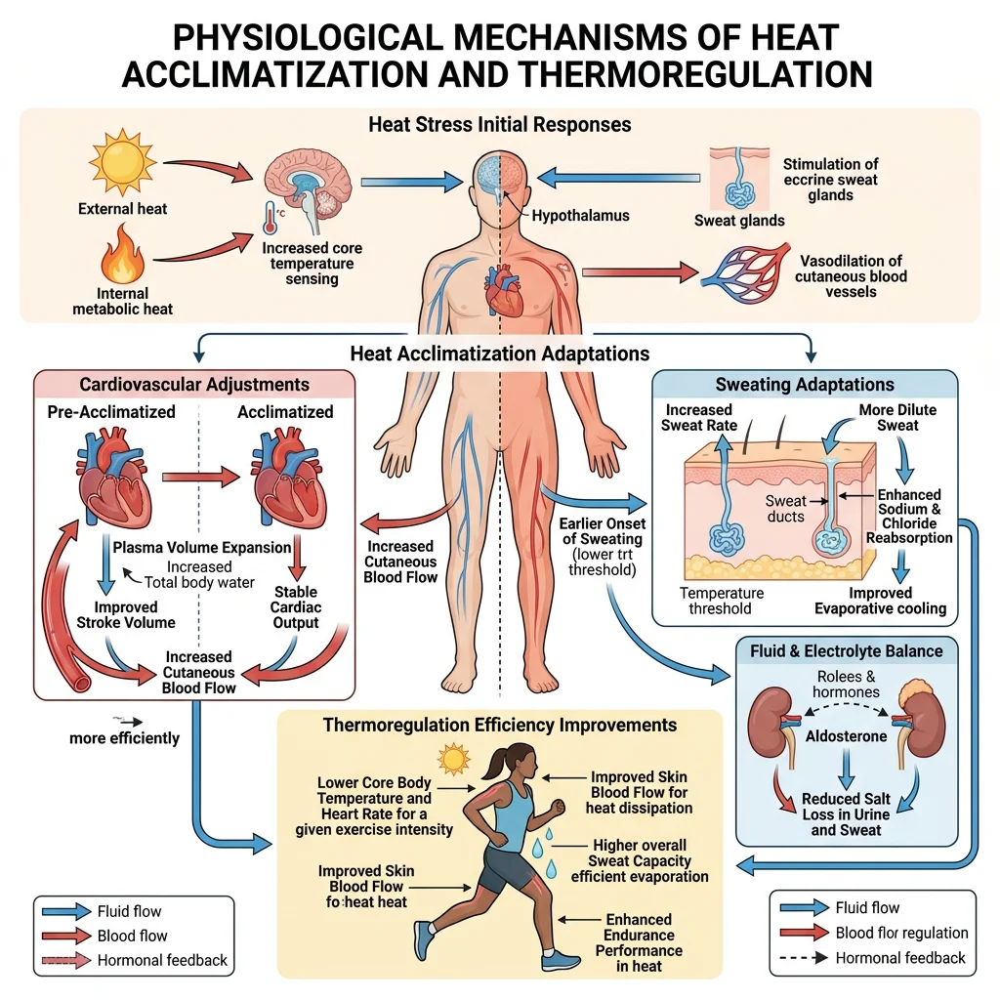
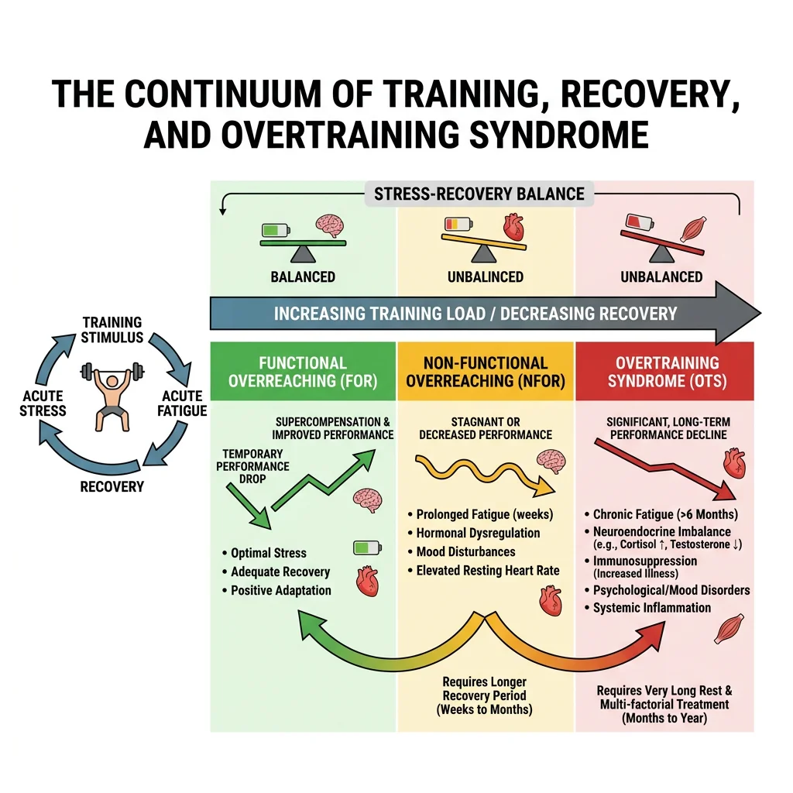

Physiology Mastery
Homeostasis & Feedback
Set points, feedback loops, allostasisNeurophysiology & Action Potentials
Neurons, action potentials, synapsesCardiac Electrophysiology & Hemodynamics
Heart rhythm, hemodynamics, cardiac outputRespiratory Mechanics & Gas Exchange
Breathing mechanics, gas exchange, V/QRenal Physiology & Fluid Balance
Nephron function, filtration, acid-baseGI Physiology & Absorption
Motility, secretion, nutrient absorptionEndocrine Regulation & Metabolism
Hormones, thyroid, adrenal, metabolismExercise Physiology & Adaptation
Acute responses, training adaptationsCellular & Membrane Physiology
Ion transport, signaling, second messengersBlood & Immune Physiology
Hematopoiesis, coagulation, immunityReproductive & Developmental
Reproduction, pregnancy, fetal physiologyIntegrative & Clinical Physiology
Stress, shock, sepsis, agingImmediate Responses to Exercise
The moment you rise from a chair and begin walking — let alone sprinting — a cascade of integrated physiological adjustments sweeps through virtually every organ system. These acute responses occur within seconds to minutes and are designed to increase oxygen delivery to working muscles, remove metabolic waste, and maintain core temperature. Understanding these responses is the foundation for appreciating how chronic training reshapes the body.

Cardiovascular Adjustments
The cardiovascular system makes the most dramatic acute adjustments during exercise. Cardiac output (CO = HR × SV) can increase from a resting ~5 L/min to 20-25 L/min in untrained individuals and up to 35-40 L/min in elite endurance athletes.
Heart Rate Response
Heart rate increases via two mechanisms:
- Vagal withdrawal: Before exercise even begins, anticipatory signals from the cerebral cortex → hypothalamus → cardiovascular centre in the medulla withdraw parasympathetic (vagal) tone. This alone raises HR from ~60 to ~100 bpm within seconds
- Sympathetic activation: Progressive increases in exercise intensity activate sympathetic nerve fibres and circulating catecholamines (adrenaline/noradrenaline), driving HR toward age-predicted maximum (~220 − age)
Stroke Volume
Stroke volume increases primarily through the Frank-Starling mechanism (increased venous return → greater end-diastolic volume → more forceful contraction) at low-to-moderate intensities. At higher intensities, sympathetic-mediated increases in contractility (positive inotropy) and decreased end-systolic volume contribute further. SV typically plateaus at ~40-60% of VO₂ max.
Blood Flow Redistribution
At rest, skeletal muscles receive ~20% of cardiac output. During maximal exercise, this increases to 80-85% through:
- Local vasodilation in active muscles: metabolites (K⁺, H⁺, adenosine, CO₂, nitric oxide) override sympathetic vasoconstriction
- Sympathetic vasoconstriction in splanchnic (gut), renal, and inactive muscle vascular beds
- Cutaneous vasodilation for thermoregulation (competing with muscle demands during heat stress)
| Organ / Tissue | Blood Flow at Rest (mL/min) | Blood Flow at Max Exercise (mL/min) | % of Cardiac Output at Max |
|---|---|---|---|
| Skeletal Muscle | ~1,000 (20%) | ~22,000 | ~84% |
| Heart (Coronary) | ~250 (5%) | ~1,000 | ~4% |
| Brain | ~750 (15%) | ~750 (preserved) | ~3% |
| Skin | ~500 (10%) | ~600 (↑ if hot) | ~2% |
| Splanchnic (Gut, Liver) | ~1,400 (28%) | ~300 | ~1% |
| Kidneys | ~1,100 (22%) | ~250 | ~1% |
Respiratory Changes
Minute ventilation (V̇E = tidal volume × respiratory rate) increases from ~6 L/min at rest to 120-180 L/min during maximal exercise — a 20-30 fold increase. Initially, tidal volume (VT) increases (using the inspiratory reserve volume); at higher intensities, respiratory rate (RR) increases predominantly.
Ventilatory Thresholds
Two ventilatory thresholds provide critical markers of exercise intensity:
- VT1 (First Ventilatory Threshold): V̇E increases disproportionately to V̇O₂ as CO₂ production rises from buffering lactic acid. Corresponds approximately to the lactate threshold (~60-70% VO₂ max in untrained). Below VT1 = comfortable conversation possible
- VT2 (Respiratory Compensation Point): V̇E increases sharply and non-linearly as metabolic acidosis overwhelms bicarbonate buffering. Corresponds to ~80-90% VO₂ max. Above VT2 = speech limited to single words; unsustainable for more than minutes
The respiratory system is not typically the limiting factor in exercise performance in healthy individuals — even at VO₂ max, arterial O₂ saturation remains above 95% (except in some highly trained athletes who may show exercise-induced arterial hypoxemia due to extremely high cardiac output reducing pulmonary transit time).
Muscle Recruitment
Motor unit recruitment follows Henneman's Size Principle: smaller, low-threshold motor units (innervating Type I slow-twitch fibres) are recruited first, with progressively larger, high-threshold motor units (Type IIa, then IIx fast-twitch fibres) recruited as force demands increase. This orderly recruitment ensures efficient fuel use at low intensities and maximal power output at high intensities.
A.V. Hill and the Oxygen Debt
In the 1920s, Nobel laureate Archibald Vivian Hill (along with Hartley Lupton) conducted treadmill experiments that established the concept of VO₂ max as a physiological ceiling. Hill observed that oxygen consumption plateaued despite increasing running speed — proving that oxygen delivery, not ventilation, limits maximal exercise capacity.
Hill also described the "oxygen debt" — now called excess post-exercise oxygen consumption (EPOC) — the elevated O₂ consumption after exercise that restores ATP/PCr stores, clears lactate, and returns body temperature and hormones to resting levels. His work laid the foundation for modern exercise physiology and earned him the 1922 Nobel Prize in Physiology or Medicine.
Muscle Physiology
Skeletal muscle constitutes ~40% of body mass and is the primary effector organ of exercise. Understanding its molecular machinery — from the sarcomere to fibre type composition to energy system interplay — is essential for exercise prescription and sport science.

Sliding Filament Mechanism
Muscle contraction occurs when actin (thin filaments) slides over myosin (thick filaments) within the sarcomere, powered by ATP hydrolysis. The sequence, known as the cross-bridge cycle, unfolds in four steps:
- Attachment: Myosin head (energised by ADP + Pᵢ) binds actin → forms cross-bridge
- Power stroke: Pᵢ then ADP release → myosin head pivots → pulls actin toward M-line (shortening sarcomere)
- Detachment: New ATP binds myosin → cross-bridge releases from actin
- Re-cocking: ATP hydrolysis → ADP + Pᵢ → myosin head returns to high-energy position (ready for next cycle)
Fiber Types (I, IIa, IIx)
Skeletal muscle fibres are classified based on their myosin heavy chain (MHC) isoform, which determines contractile speed and metabolic profile.
| Property | Type I (Slow Oxidative) | Type IIa (Fast Oxidative-Glycolytic) | Type IIx (Fast Glycolytic) |
|---|---|---|---|
| MHC Isoform | MHC-I (β) | MHC-IIa | MHC-IIx |
| Contraction Speed | Slow (~110 ms twitch) | Fast (~50 ms) | Fastest (~40 ms) |
| Fatigue Resistance | High (hours) | Moderate (minutes) | Low (seconds) |
| Metabolism | Oxidative (aerobic) | Both aerobic and anaerobic | Glycolytic (anaerobic) |
| Mitochondrial Density | High | Moderate-High | Low |
| Capillary Density | High | Moderate | Low |
| Myoglobin Content | High (red appearance) | Moderate | Low (white appearance) |
| Motor Unit Size | Small | Medium | Large |
| Example Activity | Marathon, posture maintenance | Middle-distance running (800 m) | 100 m sprint, shot put |
| Dominant in | Soleus, postural back muscles | Most mixed muscles | Lateral gastrocnemius, vastus lateralis (sprinters) |
Fibre type distribution is largely genetically determined (~45% heritability), but training can shift Type IIx → IIa (both endurance and resistance training make fast fibres more oxidative). The reverse transition (IIa → IIx) occurs with detraining. True Type I ↔ Type II conversion is extremely limited in humans.
Energy Systems (ATP-PC, Glycolytic, Oxidative)
All muscular work requires ATP, but the body stores only ~80-100 g at any time — enough for a few seconds of maximal effort. Three energy systems regenerate ATP, each with different rates and capacities:
| Energy System | Fuel Source | ATP Yield | Rate of ATP Production | Duration at Max | Activity Examples |
|---|---|---|---|---|---|
| Phosphocreatine (ATP-PC) | Creatine phosphate | 1 ATP per PCr | Fastest (~36 mmol ATP/kg/min) | 6-10 seconds | 100 m sprint, throwing, jumping |
| Anaerobic Glycolysis | Muscle glycogen / blood glucose | 2 ATP per glucose (net) | Fast (~16 mmol/kg/min) | 30-90 seconds | 400 m sprint, wrestling |
| Oxidative Phosphorylation | Glycogen, fat, (protein) | ~30-32 ATP/glucose; ~106/palmitate | Slow (~10 mmol/kg/min) | Minutes to hours | Marathon, cycling, swimming |
import numpy as np
import matplotlib.pyplot as plt
# Energy system contribution over time during maximal exercise
time_seconds = np.linspace(0, 180, 360)
# ATP-PC: dominant 0-10s, rapid decline
atp_pc = 90 * np.exp(-time_seconds / 5)
# Anaerobic glycolysis: peaks ~30-60s, then declines
glycolysis = 70 * (time_seconds / 30) * np.exp(-time_seconds / 40)
# Oxidative: ramps up gradually, dominant after ~2 min
oxidative = 75 * (1 - np.exp(-time_seconds / 60))
# Normalise to total
total = atp_pc + glycolysis + oxidative
atp_pc_pct = (atp_pc / total) * 100
glycolysis_pct = (glycolysis / total) * 100
oxidative_pct = (oxidative / total) * 100
fig, ax = plt.subplots(figsize=(10, 6))
ax.stackplot(time_seconds, atp_pc_pct, glycolysis_pct, oxidative_pct,
labels=['ATP-PC (Phosphagen)', 'Anaerobic Glycolysis', 'Oxidative'],
colors=['#BF092F', '#16476A', '#3B9797'], alpha=0.85)
ax.set_xlabel('Time (seconds)')
ax.set_ylabel('% Contribution to ATP Production')
ax.set_title('Energy System Contribution During Maximal Exercise')
ax.legend(loc='center right')
ax.set_xlim(0, 180)
ax.set_ylim(0, 100)
ax.grid(True, alpha=0.3)
plt.tight_layout()
plt.show()

Training Adaptations
While acute responses reverse within minutes to hours, chronic adaptations to regular training produce lasting structural and functional changes that improve the body's capacity for physical work. These adaptations are specific to the type of training stimulus — endurance training enhances oxygen delivery and utilisation, while resistance training increases force production.

VO₂ Max Changes
VO₂ max (maximal oxygen uptake) is the gold standard measure of cardiorespiratory fitness, defined as the maximum rate at which the body can consume oxygen during whole-body exercise. By the Fick equation:
Typical VO₂ max values:
- Sedentary adult: 30-40 mL/kg/min
- Recreationally active: 40-50 mL/kg/min
- Highly trained endurance athlete: 60-70 mL/kg/min
- Elite cross-country skiers / cyclists: 75-90+ mL/kg/min (Bjørn Dæhlie: 96 mL/kg/min)
Training can improve VO₂ max by 15-25% in previously sedentary individuals (with genetic variation in responsiveness), and VO₂ max declines ~10% per decade after age 25 — though regular exercise cuts this decline roughly in half.
Cardiac Remodeling
Chronic exercise training causes structural changes in the heart known as athlete's heart. The pattern depends on the type of training:
| Feature | Endurance Training (Volume Overload) | Resistance Training (Pressure Overload) |
|---|---|---|
| Hemodynamic Stimulus | ↑ Preload (↑ venous return) | ↑ Afterload (↑ systemic BP during lifting) |
| LV Remodeling | Eccentric hypertrophy (↑ chamber size + proportional wall thickness) | Concentric hypertrophy (↑ wall thickness, normal/small chamber) |
| Resting HR | ↓↓ (40-50 bpm; ↑ vagal tone + intrinsic rate changes) | Mild ↓ |
| Stroke Volume | ↑↑ (may exceed 200 mL in elite athletes) | Moderate ↑ |
| ECG Findings | Sinus bradycardia, ↑ QRS voltage, early repolarisation, 1° AV block | ↑ QRS voltage |
Athlete's Heart vs Hypertrophic Cardiomyopathy (HCM)
A 22-year-old university rower presents for pre-participation screening. Echocardiography shows LV wall thickness of 13 mm (upper limit of normal: 12 mm) with an LV end-diastolic dimension of 58 mm. Resting HR: 44 bpm. ECG shows sinus bradycardia with voltage criteria for LVH.
The clinical dilemma: Is this athlete's heart (benign, physiological) or HCM (pathological, risk of sudden cardiac death)? Key differentiators:
- Athlete's heart: enlarged cavity, proportional wall thickness, normal diastolic function, regression with detraining
- HCM: asymmetric septal hypertrophy, small cavity, impaired diastolic relaxation, no regression with detraining, often family history of sudden death
In this case, the dilated LV cavity, resting bradycardia, and symmetric hypertrophy favour athlete's heart. A 3-month detraining trial confirmed regression of wall thickness to 10 mm.
Mitochondrial Biogenesis
Endurance training triggers a profound increase in mitochondrial content within skeletal muscle — a process called mitochondrial biogenesis. The master regulator is PGC-1α (peroxisome proliferator-activated receptor gamma coactivator 1-alpha), which is activated by:
- AMPK (AMP-activated protein kinase) — the cell's "fuel gauge" activated by ↑ AMP/ATP ratio during energy depletion
- CaMK (calcium-calmodulin-dependent kinase) — activated by repeated Ca²⁺ transients during muscle contraction
- p38 MAPK — a stress kinase activated by exercise-induced ROS and cytokines
PGC-1α co-activates transcription factors (NRF-1, NRF-2, TFAM) that upregulate both nuclear-encoded and mitochondrial-encoded genes, increasing mitochondrial volume density by 50-100% with sustained training. This adaptation improves fatty acid oxidation capacity, delays glycogen depletion, and reduces lactate production at submaximal intensities — the metabolic basis of endurance fitness.
Lactate Threshold Shifts
The lactate threshold (LT) is the exercise intensity above which blood lactate accumulation exceeds clearance. In untrained individuals, LT occurs at ~50-60% of VO₂ max. In elite endurance athletes, LT can reach 80-90% of VO₂ max — meaning they can sustain a higher fraction of their maximal capacity before fatigue sets in.
Training shifts LT rightward through:
- ↑ Mitochondrial density → greater capacity to oxidise pyruvate → less conversion to lactate
- ↑ MCT1 (monocarboxylate transporter 1) expression → better lactate uptake by oxidative fibres and the heart (lactate is a fuel, not just waste)
- ↑ Capillary density → better O₂ delivery and lactate washout
- Shift from Type IIx → Type IIa fibres → more oxidative capacity
import numpy as np
import matplotlib.pyplot as plt
# Simulate lactate curves for untrained vs trained
intensity_pct = np.linspace(20, 100, 200) # % VO2 max
# Untrained: LT at ~55% VO2 max
untrained_lactate = 1.0 + 0.5 * np.exp(0.07 * (intensity_pct - 55))
# Trained: LT shifted right to ~80% VO2 max
trained_lactate = 0.8 + 0.4 * np.exp(0.08 * (intensity_pct - 80))
fig, ax = plt.subplots(figsize=(9, 6))
ax.plot(intensity_pct, untrained_lactate, 'r-', linewidth=2, label='Untrained (LT ~55% VO₂max)')
ax.plot(intensity_pct, trained_lactate, 'b-', linewidth=2, label='Endurance-Trained (LT ~80% VO₂max)')
ax.axhline(y=4.0, color='gray', linestyle='--', alpha=0.5, label='OBLA (4 mmol/L)')
ax.axvline(x=55, color='r', linestyle=':', alpha=0.4)
ax.axvline(x=80, color='b', linestyle=':', alpha=0.4)
ax.set_xlabel('Exercise Intensity (% VO₂ max)')
ax.set_ylabel('Blood Lactate (mmol/L)')
ax.set_title('Lactate Threshold Shift with Endurance Training')
ax.legend()
ax.set_ylim(0, 15)
ax.grid(True, alpha=0.3)
plt.tight_layout()
plt.show()

Environmental Physiology
Exercise in extreme environments challenges thermoregulation, oxygen delivery, and fluid balance beyond what is encountered in temperate conditions. The body's ability to acclimatise to heat, cold, and altitude demonstrates remarkable physiological plasticity.

Heat Adaptation
During exercise in heat, the competing demands for blood flow — to muscles for oxygen delivery and to skin for heat dissipation — create cardiovascular strain. Core temperature can rise above 40°C during prolonged exercise in hot environments.
Heat Acclimatisation (10-14 days of repeated heat exposure)
- ↑ Plasma volume (up to 10-12%) — via aldosterone-mediated Na⁺ retention and albumin synthesis → better cardiac filling and cardiac output
- Earlier onset of sweating + ↑ sweat rate (up to 2-3 L/hour) — lower skin temperature, better evaporative cooling
- ↓ Sweat sodium concentration — aldosterone acts on sweat glands to conserve sodium
- ↓ Core temperature at given workload — set point effectively lowered
- ↓ Heart rate at given workload — improved cardiac output from ↑ plasma volume
Exertional Heat Stroke
An 18-year-old football player collapses during summer practice in 35°C / 80% humidity. Core temperature (rectal) = 41.5°C, altered mental status, tachycardia, hypotension. This is exertional heat stroke (EHS) — a medical emergency with mortality rates of 50% if not cooled rapidly.
Pathophysiology: Core temperature exceeds the body's ability to thermoregulate → cellular protein denaturation → endothelial damage → DIC (disseminated intravascular coagulation) → multi-organ failure. Gut barrier breakdown → endotoxaemia amplifies systemic inflammatory response.
Treatment: Immediate cold water immersion (ice bath) — the single most effective intervention. Goal: reduce core temperature below 39°C within 30 minutes ("cool first, transport second"). Replace fluids IV. Monitor for rhabdomyolysis (↑ CK, myoglobinuria), acute kidney injury, and hepatic failure.
Cold Exposure
Cold stress activates distinct thermoregulatory mechanisms:
- Peripheral vasoconstriction: Sympathetic activation → ↓ skin blood flow → reduces convective heat loss (but increases risk of frostbite in extremities)
- Shivering thermogenesis: Involuntary rhythmic contraction of skeletal muscles → generates heat (up to 5× resting metabolic rate, but fatiguing)
- Non-shivering thermogenesis: Brown adipose tissue (BAT) expresses UCP1 (uncoupling protein 1) → proton leak across inner mitochondrial membrane → generates heat instead of ATP. Significant in neonates; increasingly recognised in adults (especially in the supraclavicular region)
- Cold-induced diuresis: Peripheral vasoconstriction → shifts blood centrally → ↑ atrial stretch → ↓ ADH → ↑ urine output → compounding dehydration risk
Hypothermia classification: Mild (32-35°C): shivering, confusion; Moderate (28-32°C): loss of shivering, atrial fibrillation, decreased consciousness; Severe (<28°C): ventricular fibrillation risk, coma. Critical rule: "No one is dead until they are warm and dead" — rewarming must be attempted before death is declared in hypothermic patients.
High Altitude Physiology
At altitude, barometric pressure decreases while the fractional concentration of O₂ remains 20.9%. The result: lower inspired PO₂ → lower alveolar PO₂ → hypobaric hypoxia. At the summit of Everest (8,849 m), PiO₂ is ~43 mmHg — less than a third of sea-level values.
Acute Responses (Hours to Days)
- Hyperventilation: Peripheral chemoreceptors (carotid bodies) detect ↓ PaO₂ → ↑ ventilation → ↓ PaCO₂ → respiratory alkalosis. This alkalosis initially limits the ventilatory response (central chemoreceptors respond to ↓ CO₂ by reducing drive). Over 2-3 days, the kidneys excrete HCO₃⁻ to compensate, "resetting" the pH and permitting further hyperventilation
- ↑ Heart rate and cardiac output (sympathetic activation)
- Acute Mountain Sickness (AMS): Headache, nausea, fatigue, insomnia — onset 6-12 hours, peaks at 24-72 hours
Chronic Acclimatisation (Days to Weeks)
- ↑ EPO secretion from kidneys → erythropoiesis → ↑ haemoglobin and haematocrit (from ~15 g/dL to ~18-20 g/dL at extreme altitude) → ↑ O₂-carrying capacity
- ↑ 2,3-DPG in red blood cells → right-shifts the O₂-haemoglobin dissociation curve → facilitates O₂ unloading at tissues
- ↑ Capillary density and myoglobin in skeletal muscle
- Hypoxic pulmonary vasoconstriction (HPV): Generalised at altitude → ↑ pulmonary artery pressure → can cause HAPE (high altitude pulmonary oedema) in susceptible individuals
Advanced Topics
Overtraining Syndrome
Overtraining syndrome (OTS) occurs when chronic training stress exceeds the body's recovery capacity, resulting in maladaptation rather than improvement. It represents one end of an overreaching continuum:

- Functional overreaching (FOR): Short-term performance decrement → recovery in days to weeks → supercompensation (planned in periodised training)
- Non-functional overreaching (NFOR): Prolonged performance decrement → weeks to months for recovery → no additional performance benefit
- Overtraining syndrome (OTS): Persistent unexplained performance decline + mood disturbances + autonomic dysfunction → months to years for recovery (if ever)
OTS is characterised by paradoxical HPA axis dysregulation — initially exaggerated cortisol response, then blunted cortisol response to exercise (adrenal exhaustion). Symptoms include: persistent fatigue, insomnia, mood disturbance (depression, irritability), elevated resting HR, frequent illness (immunosuppression), loss of appetite, and perceived exertion much higher than expected for a given workload.
Recovery Physiology
Recovery from exercise involves restoring homeostasis across multiple systems:
| Parameter | Time to Full Recovery | Key Process |
|---|---|---|
| ATP / PCr stores | 3-5 minutes | PCr resynthesis via creatine kinase (O₂-dependent) |
| Muscle glycogen | 24-48 hours | Glycogen synthase activity peaks post-exercise ("glycogen window" — first 2 hours) |
| Blood lactate | 30-60 minutes | Oxidised by heart, liver, and inactive muscles; or converted to glucose (Cori cycle) |
| Core temperature | 20-40 minutes | Continued sweating + vasodilation → convective and evaporative cooling |
| Fluid balance | 4-24 hours | Oral rehydration; aldosterone-mediated Na⁺ retention aids fluid retention |
| Muscle protein balance | 24-72 hours | mTOR-mediated protein synthesis (peaks 24 h post-resistance exercise) |
| Muscle damage (DOMS) | 3-7 days | Satellite cell activation, inflammatory repair cascade |
Aging & Exercise
Aging produces inevitable physiological decline, but regular exercise dramatically attenuates the rate of deterioration:
- VO₂ max: Declines ~10% per decade after 25 (sedentary) vs ~5% per decade (active). A fit 70-year-old can have a VO₂ max equivalent to a sedentary 30-year-old
- Sarcopenia: Loss of ~3-5% of muscle mass per decade after 30 (mainly Type II fibres). Resistance training is the most effective countermeasure — even in 90-year-olds, strength training produces significant hypertrophy
- Bone density: ~0.5-1% loss per year after peak bone mass. Weight-bearing and resistance exercise slow this decline; impact exercises stimulate osteoblast activity via mechanostat signaling
- Cardiovascular risk: Regular moderate exercise reduces all-cause mortality by ~30-35% and cardiovascular mortality by ~45% (meta-analysis data). The dose-response curve shows the greatest benefit from moving from sedentary to minimally active (150 min/week of moderate activity)
Interactive Tool
Use this Exercise Prescription Generator to create personalised exercise programmes based on fitness assessments. Enter baseline fitness data, training zones, and prescription parameters to generate a professional document in Word, Excel, or PDF format.
Exercise Prescription Generator
Capture fitness assessment data, calculate training zones, and create a personalised exercise prescription. Download as Word, Excel, or PDF.
Practice Exercises
Conclusion & Next Steps
Exercise physiology bridges the gap between cellular biochemistry and whole-body performance, demonstrating how integrated organ systems respond to the most fundamental human activity — physical movement. From the immediate cardiovascular and respiratory adjustments that increase oxygen delivery twenty-fold, through the molecular machinery of the sarcomere and the interplay of three energy systems, to the remarkable chronic adaptations that reshape the heart, vasculature, and mitochondria — understanding these processes is essential for clinical medicine, sports science, and public health.
Key principles to carry forward include: (1) the size principle governs orderly motor unit recruitment; (2) energy system interplay is continuous and intensity-dependent, not sequential; (3) training adaptations are specific to the stimulus (endurance vs resistance); (4) environmental challenges (heat, cold, altitude) reveal the body's extraordinary capacity for acclimatisation; and (5) exercise is quite literally medicine — with dose-response benefits rivalling any pharmaceutical intervention.
In Part 9, we descend to the cellular level to explore membrane physiology and cell signaling — the fundamental transport processes, ion channels, second messenger systems, and signal transduction cascades that underpin every physiological response we have discussed so far.